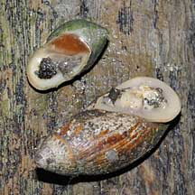
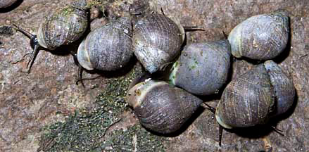

Belongkeng or Mangrove ear snails
Family Ellobiidae
updated
Jul 2020
Where
seen? These snails with thick shells are sometimes seen
on leaves and trunks of mangrove trees or on the mud in the back mangroves.
They are sometimes also called Mangrove helmet shell snails. Empty
shells of dead snails are sometimes also washed up on shores near
mangroves.
Features: 1-5cm. Shells thick.
They breathe air (instead of through gills like most other marine
snails) and all lack an operculum to seal the shell opening. Thus,
the shell opening of small ones do resemble an ear.
What do they eat? They graze on
algae and lichen growing on mangrove trees and debris. |

Two different
kinds of Belongkeng snails
Pasir Ris, Jun 10 |

Sometimes seen in small groups on mangrove tree trunks.
Sungei Buloh Besar, Apr 11 |
Human uses: The larger snails are eaten
as traditional and subsistence food in some coastal communities.
Status and threats: The Mangrove
land snail (Ellobium scheepmakeri) is listed as 'Critically
Endangered' on the list of threatened animals of Singapore due to
habitat loss. Like other creatures of the intertidal zone, they are
affected by human activities such as reclamation and pollution. Overcollection
can also have an impact on local populations. |
| Some Belongkeng snails
on Singapore shores |
Family
Ellobiidae recorded for Singapore
from Tan
Siong Kiat and Henrietta P. M. Woo, 2010 Preliminary Checklist
of The Molluscs of Singapore.
| |
Auriculastra
brachyspira
Auriculastra duplicata
Auriculastra oparica
Auriculastra semiplicata
Auriculastra siamensis
Auriculastra subula
Blauneria quadrasi
Cassidula sp. (Mangrove
ear snail)
Cassidula aurisfelis (Cat's ear mangrove ear snail)
Cassidula doliolum
Cassidula nucleus (Banded mangrove
ear snail)=Cassidula mustelina
Cassidula sowerbyana
Cassidula vespertilionis
Ellobium sp. (Belongkeng
snail)
Ellobium aurisjudae
Ellobium aurismidae
Ellobium scheepmakeri (Mangrove
land snail) (CR: Critically endangered)=Ellobium
aurismalchi
Ellobium tornatelliforme
Laemodonta minuta
Laemodonta punctatostriata
Laemodonta punctigera (Ear-snail)
Laemodonta siamensis
Laemodonta typica
Melampus flavus
Melampus fasciatus
Melampus nucleolus
Melampus pulchellus (Pretty ear-snail)
Melampus sincaporensis
Microtralia alba
Microtralia sp.
Pythia sp. (Pythia snail)
Pythia plicata
Pythia scarabaeu
Pythia trigona |
|
| Links
References
- Chan Sow-Yan & Lau Wing Lup. 30 July 2020. Sightings of pretty ear-snails, Melampus pulchellus, in Singapore. Singapore Biodiversity Records 2020: 94-97 ISSN 2345-7597
- Chan Sow-Yan & Lau Wing Lup. 30 July 2020. Sightings of live Auriculastra brachyspira snails in Singapore. Singapore Biodiversity Records 2020: 91-93 ISSN 2345-7597
- Chan Sow-Yan & Lau Wing Lup. 29 May 2020. Examples of live ear-snails, Laemodonta punctigera, in Singapore. Singapore Biodiversity Records 2020: 66-67 ISSN 2345-7597
- Tan Siong
Kiat and Henrietta P. M. Woo, 2010 Preliminary
Checklist of The Molluscs of Singapore (pdf), Raffles
Museum of Biodiversity Research, National University of Singapore.
- Tan, S. K.,
S. H. Tan & M. E. Y. Low. 25 Aug 2009. On Ellobium aurismalchi
(Muller, 1774) (Mollusca: Ellobiidae). Nature in Singapore, 2:
357-359.
- Tan, K. S.
& L. M. Chou, 2000. A
Guide to the Common Seashells of Singapore. Singapore
Science Centre. 160 pp.
- Wee Y.C.
and Peter K. L. Ng. 1994. A First Look at Biodiversity in Singapore.
National Council on the Environment. 163pp.
- Davison,
G.W. H. and P. K. L. Ng and Ho Hua Chew, 2008. The Singapore
Red Data Book: Threatened plants and animals of Singapore.
Nature Society (Singapore). 285 pp.
|
|
|